Joe is the 22nd hero that you will unlock at Stage 3300.
Abilities
| Quick Shots | |
|---|---|
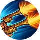 |
Shoot your target for 110% of your damage. Adds 1 combo point. Cost: 30 Energy. |
{kind=link}
| Precision Strikes | |
|---|---|
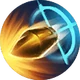 |
Shoot 1 enemy per combo point with a precision strike for 150% of your damage. Enemies hit by a precision strike will be dazed for 6 seconds and their miss chance will be increased by 5%. If an enemy receives multiple precision strikes the miss chance will be stacked. Consumes all your combo points. 12 seconds cooldown. Cost: 45 Energy. |
{kind=link}
{kind=link}
Gear
| Weapon | Chest | Boots | Ring | |
|---|---|---|---|---|
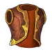 |
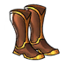 |
|||
| Wrist | Shoulder | Belt | Relic | |
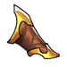 |
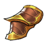 |
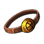 |
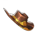 | |
| Ankh | Rune | Idol | ||
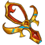 |
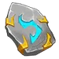 |
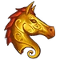 |
||
| Talisman | Necklace | Trinket | ||
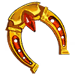 |
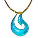 |
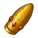 |
{kind=link}
{kind=link}
{kind=link}
{kind=link}
{kind=link}
{kind=link}
{kind=link}
{kind=link}
{kind=link}
{kind=link}
{kind=link}
{kind=link}
{kind=link}
{kind=link}
Story
The Gunslinger
{kind=link}
{kind=link}
The gunslinger
It was a dark moonless night and the sky was raging with thunder and lightning, yet in the Tipsy Wisp tavern nobody seemed to care, the ale was flowing from the barrel taps like it was the last day on Alandria. In other words just an ordinary night. Dwarfs, humans, elves and all other races were forgetting their differences to enjoy the night and listen to the bards singing, all while trading their hard earned gold with more booze.
Joe was not an ordinary customer, Tipsy Wisp was like his unofficial “office”. For people on his line of work it was the place to conduct “business”. And everyone that required his “services” knew that he would be there. The services Joe provided are hard to describe officially, but you could get a sense of it by seeing him carry guns and knives at all times. He was not a criminal, instead people that got to work with him describe him as someone who “resolves injustice”. For him to work with you however you had to prove that you were on the right side. Joe had a code. He was like an unofficial justice system and he was good at it. By just looking at his face you knew that he was not the person to mess with.
That was all in the past though. Joe had long retired from this kind of work after someone tricked him and instead of providing justice, he further grew the injustice. That incident left a mark so deep into his soul that he could not forgive his own self. He seeked redemption but he could not find it. Instead he could only temporarily forget with booze while turning down anyone that was offering him a job. He kept going to the tavern out of self-pity and because he didn’t know what else to do. His days of glory were just a faint memory or at least it’s what everyone thought…
That night Joe had drunk a great deal, he was almost hiding at the back of the tavern close to a fireplace to be warm. He had laid back to the wall next to the window, and his notorious decorated black hat was covering half of his face as he was probably sleeping. The hustle and bustle in the tavern and the hundreds of conversations overlapping each other was bringing him peace and helped him to relax.
This peaceful and casual night was about to change however. Suddenly the big bell of the village started ringing intensively. Something was off. The music stopped and the people started chattering. Joe woke up from the whole disruption. He moved his shoulder an inch, opened half an eye and looked outside towards the bell tower, only to see a devious and monstrous figure holding the bell guard into its hands screaming, “Where is he?”, seconds before gutting him and throwing him into the void. That very moment Joe sobered up. Something terrible was happening. As he sat up to quickly fix his weaponry the door of the tavern was kicked down by another monster. A huge Undead had just entered the tavern screaming while his wicked red eyes were glowing, spreading the terror. “Where is he?” the monster screamed. Nobody understood who he meant or even cared. Two dwarves took out their axes and attacked it only to be killed within seconds. The monster then looked around as everyone was terrified and stunned until its eye met with Joe’s, in a second it started running viciously towards him. Joe was already aiming it with his gun however, so before it reached halfway he pulled the trigger and a silver bullet was flying at an incredible speed towards the animated pile of bones until it reached the empty skull and broke it into dust and fragments.
Everyone was stunned and amazed by what happened, as it was a quick lesson that these monsters can be defeated. Joe took his gun down and said towards everyone.
“Gentlemen, we ought to protect our village, TO ARMS”.
With raised morale everyone took out their arms and got out to fight alongside Joe. Eleven Undead elite soldiers were spreading havoc, an epic battle followed with a few casualties but the Undead were beaten. Joe’s gunslinger skills turned the tide of battle. A little before it was over Joe walked close to a monster that was lying without limbs to terminate its futile existence. Then the undead whispered to him “Youuuuu”. Joe was stunned, why the monster was calling him, it was the second time that he drew attention that night. His necklace started sparkling. Joe instantly got terrified by this sorcery, he took out his gun and executed the monster.
He then moved back to his people that were gathered discussing the events. As he was getting closer he heard someone saying: “A full squad of undead soldiers crossed half the world. They remained undetected, bypassing hundreds of patrols and villages and secretly infiltrated our village. How random can this be? Are we cursed? Dear Aurelia, please help us!”
Joe replied: “I’m not sure if Aurelia can hear you, but I think I know why they came here. Before I killed the last one, it called me and this trinket in my necklace, a gift of my long gone mother, responded to it with an ethereal light. All this time I was holding onto it for its sentimental value but now I see that it’s not just an ornament.”
“Destroy it before this sorcery kills us, did you see what they have done?” someone from the mob said.
“I don’t think we should destroy it. If they came all this way for it and for me it means that it must be important to them. I need to look for answers and maybe it's about time that my gun serves a higher purpose. I will be gone with the first light.” Joe said and retreated to rest.
As the morning sun came up, Joe woke up to start packing. It was a peaceful morning and everyone was resting, the only thing that was disrupting the silence was the chirping birds. Until suddenly something very noisy was approaching from the air very swiftly. Joe looked up wondering what could that be. Within a few minutes a mysterious flying machine landed into his yard and a gnome girl came out of it and started looking around and then on a weird magical device. He got out of the house, approached her at gunpoint and said:
“Who are you?”
“Take it easy cowboy and put that gun down. If I wanted to harm you I would blast your house with my sky-copter before you could even spell “Arcanocrystal”, she replied.
Joe put the gun away and asked again. “Okay shortie, you win, now explain yourself.”
“I’m Molly, the famous Techno-magician. I was flying to Hombor last night when my ship’s sensors started spiking like they were possessed, so I changed my course and apparently the source of that energy should be in that house.” Molly starts walking around looking at her weird device following the power surge. “And according to this, it should be right here!” And she stopped right in front of Joe. “What is that? Let me see.” Joe pulled back and said: “This is mine, it's a gift from my mother”. “I’m not gonna steal it, I just want to see it, do you want answers or not? As I was descending I saw lots of blood around, I know that someone is after this.” Joe relaxed a bit, took out his necklace and gave it to Molly.
“Big guy, do you have any idea what this is?”
“A gift, apparently a magical one?” he replied.
“This my friend is the Dragon’s Tear. That’s right, I remember seeing a drawing of it during my studies in Cogwheel. This is an Ancient Artifact that gives immense power to its owner and has the power to sense the Undead.” Molly said.
“This explains a lot, that sparkling last night, the fact that I never miss a shot…”, Joe replied.
“Take it back, with that and with the on-going war you have a target on your back, but if you want more answers and you want to help, come with me Joe.”
“I was about to go to Irongard to look for answers.”
“You will find nothing in Irongard, we need to go to Stormspire, this relic was lost for centuries, and we need the help of the mages there to unravel the mysteries of this thing.”
“All right, let’s go. Then!”
And they both left looking for answers of that mysterious relic.
The Elegant Buccaneer


{kind=link}
The elegant buccaneer
Sometimes it's nice to change the scenery, or so they say. Joe has finally given in to Astrid's tall tales of the high seas and brave pirates, relieving the rich from their money and giving it to the poor. He took a new spin on it though: take everything, give nothing back. The richer the target, the better. His crew motto is actually "Saving the dragons, robbing the princesses". While they are yet to save a single dragon, Joe thinks that the beast will share with him part of its hoard. Oh well, this wishful thinking is yet to be proven.